't Stad (The City)
Antwerp architecture
Coming in the next update Antwerp isn't in the App Store version yet. Get the app now and it arrives with the update.
Legend says the city's name comes from 'hand-throwing': the hero Silvius Brabo cut off the hand of a cruel giant and flung it into the Scheldt. Antwerp is also the hub of the world's diamond trade — around 85 percent of the world's rough diamonds pass through its diamond district each year.
- 15Landmarks
- 1225Oldest · Het Steen
- 123 mTallest · Cathedral of Our Lady
- 14Architects
Map and Look Around
Tap a numbered pin to see that landmark from the street with Apple Look Around.
Eat and stay near
Restaurants
Hotels
From Apple Maps. Walking times are estimates from straight-line distance.
Before you go
- Fly intoBrussels Airport (BRU)
Antwerp's own airport, Antwerp International, is a small airfield about 5 km south of the city, so most visitors fly into Brussels Airport in Zaventem, Belgium's main international hub. Since 2012 the Diabolo rail line has linked Brussels Airport directly with Mechelen and Antwerp.
- CurrencyEuro (€)
- LanguageDutch
Dutch is the official language of Antwerp, which lies in Belgium's Flemish Region, and you will also hear the local Antwerp dialect. People from Antwerp are nicknamed 'Sinjoren', from the Spanish 'señor', a reminder of the Spanish noblemen who ruled the city in the 17th century.
- Getting aroundTrams & Premetro
De Lijn runs Antwerp's tram network, and eight of its fourteen lines dip partly underground into the tunnels of the Antwerp Premetro. The city's first horse-drawn tram began running on 25 May 1873, linking the church in Berchem with the Meir.
- Where to stayFind hotels in Antwerp on Expedia Compare on Booking.com Vacation rentals on Vrbo
Stamped! may earn a commission when you book through these links.
- Tours and ticketsFind tours in Antwerp on GetYourGuide More tours on Viator
Skip-the-line tickets and guided tours of the landmarks. Stamped! may earn a commission.
15 landmarks in Antwerp
-

Photo: Fred Romero from Paris, France, CC BY 2.0, via Wikimedia Commons Antwerp-Central Station
Koningin Astridplein 27, 2018 Antwerp, Belgium
Antwerp's 'railway cathedral' earned its nickname from the vast dome over its waiting hall. Louis Delacenserie's stone-clad building went up between 1895 and 1905, mixing so many influences that historians struggle to give it one style, while engineer Clément Van Bogaert designed the iron-and-glass train hall, 185 metres long. Damaged by V-2 rockets in the war and closed for repairs in 1986, it gained tunnels for through trains in 2007. Newsweek ranked it the world's fourth-greatest station, and Mashable called it the most beautiful.
- Built
- 1905
- Architect
- Louis Delacenserie
- Style
- Eclecticism
- Today
- Railway station
-
Photo: Torsade de Pointes, CC BY-SA 4.0, via Wikimedia Commons Port House
Zaha Hadidplein 1, 2030 Antwerp, Belgium
Zaha Hadid had one rule from the port authority: keep the old fire station. Her answer was to perch a faceted glass 'diamond' on top of it, shaped like a ship's hull with a bow pointing over the Kattendijk dock — a nod to Antwerp's diamond trade. Construction began in 2012 and the building opened in September 2016, the year of Hadid's death; it is the only government building she designed. Rising 46 metres, it houses about 500 port staff, and the square in front was named Zaha Hadidplein.
- Built
- 2016
- Architect
- Zaha Hadid
- Style
- Neo-futurism
- Height
- 46 m (151 ft)
- Today
- Port authority headquarters
-
Photo: Zinneke, CC BY-SA 3.0, via Wikimedia Commons Museum aan de Stroom
Hanzestedenplaats 1, 2000 Antwerp, Belgium
The MAS — 'Museum by the Stream' — is a 60-metre stack of Indian red sandstone and curved glass on the Scheldt in the old Eilandje docks. Designed by Neutelings Riedijk Architects, it opened in May 2011 as Antwerp's largest museum, taking over collections from the city's maritime and ethnographic museums. It stands where the Hanseatic merchants' Hanzehuis once stood, and its 470,000 objects tell the story of Antwerp and its links with the world. Its first gallery is a 'visible store' showing 180,000 items.
- Built
- 2011
- Architect
- Neutelings Riedijk Architects
- Style
- Postmodern Art Deco
- Height
- 60 m (197 ft)
- Today
- Museum
-
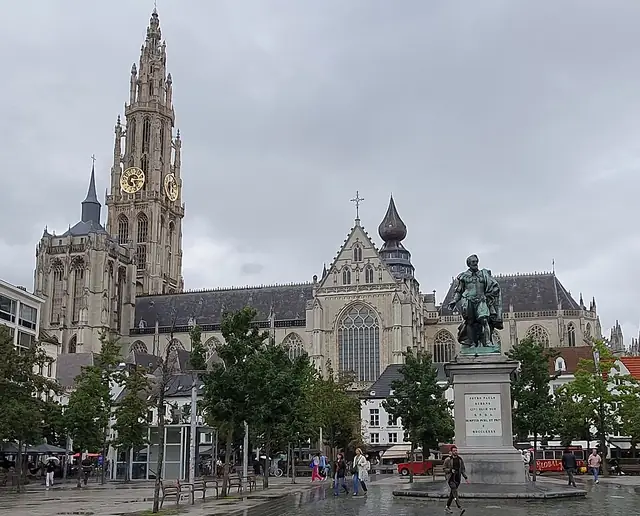
Photo: Yair Haklai, CC BY-SA 4.0, via Wikimedia Commons Cathedral of Our Lady
Groenplaats 21, 2000 Antwerp, Belgium
The largest Gothic church in Belgium took nearly 170 years to build: work began in 1352 and the first stage ended in 1521, yet it was never fully completed — only one of its two planned towers was finished. That north tower soars 123 metres, still the city's tallest landmark, and its belfry is part of a UNESCO World Heritage listing. Designed by Jan and Pieter Appelmans, the cathedral is famous for its paintings by Peter Paul Rubens, alongside works by Otto van Veen and Marten de Vos.
- Built
- 1521
- Architect
- Jan & Pieter Appelmans
- Style
- Gothic
- Height
- 123 m (404 ft)
- Today
- Cathedral
-
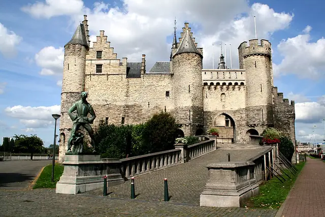
Photo: Jean-Pol GRANDMONT, CC BY-SA 3.0, via Wikimedia Commons Het Steen
Steenplein 1, 2000 Antwerp, Belgium
Antwerp's oldest building, Het Steen was built between 1200 and 1225 as the gateway to a larger castle of the Dukes of Brabant that controlled the River Scheldt. Its name, 'the stone castle', dates from a major rebuilding under Charles V around 1520. Over the centuries it served as a court and as a prison from 1303 until 1827, and later as a maritime museum. Most of the castle was demolished in the 19th century when the quays were straightened, and after a renovation Het Steen reopened in 2021 as a visitor centre.
- Built
- 1225
- Today
- Visitor centre
-
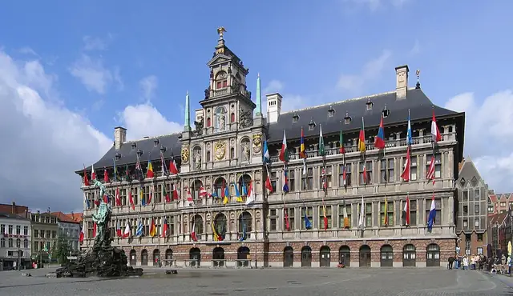
Photo: No machine-readable author provided. Klaus with K assumed (based on copyright claims)., CC BY-SA 3.0, via Wikimedia Commons Antwerp City Hall
Grote Markt 1, 2000 Antwerp, Belgium
Built between 1561 and 1565 on the Grote Markt, Antwerp's City Hall was designed by Cornelis Floris de Vriendt and other artists in a Renaissance style blending Flemish and Italian ideas. A rusticated arcaded ground floor once held small shops, with columned storeys and an open gallery above and a richly carved central section rising above the roofline. Burnt out in the Spanish Fury of 1576, it was restored within three years. It became a model for Renaissance town halls across the Low Countries and is part of a UNESCO World Heritage listing.
- Built
- 1565
- Architect
- Cornelis Floris de Vriendt
- Style
- Renaissance
- Stories
- 4
- Today
- City hall
-
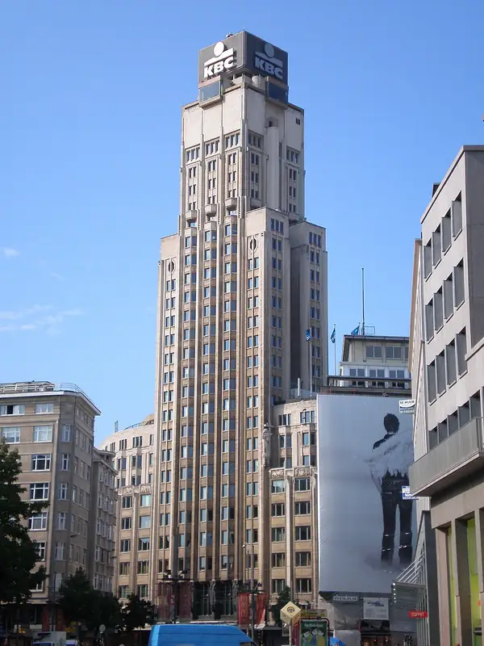
Photo: User:Manfreeed, CC BY-SA 2.5, via Wikimedia Commons Boerentoren
Schoenmarkt 35, 2000 Antwerp, Belgium
The 'Farmers' Tower' got its nickname from its builder, the Middenkredietbank, which looked after money for farmers. Designed in Art Deco style by Jan Vanhoenacker, Emiel Van Averbeke and Jos Smolderen and finished in the early 1930s, it was one of Europe's very first skyscrapers and the continent's second-tallest building at the time. With 26 floors, it was Belgium's tallest building until 1960 and Antwerp's until 2019. Its roof was raised in 1976 and now stands at 95.8 metres, topped by the KBC logo.
- Built
- 1932
- Architect
- Jan Vanhoenacker, Emiel Van Averbeke & Jos Smolderen
- Style
- Art Deco
- Height
- 96 m (314 ft)
- Stories
- 26
- Today
- Office tower
-
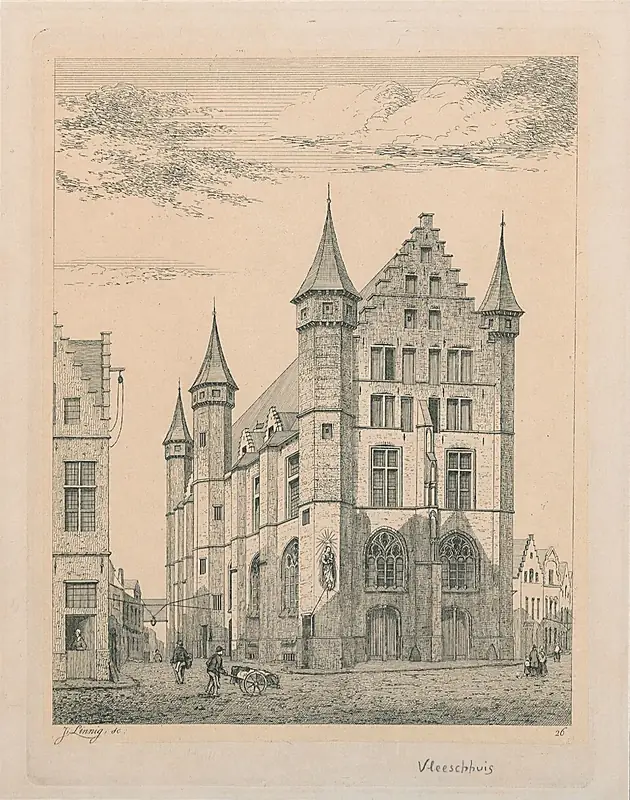
Photo: Jozef Linnig, CC0, via Wikimedia Commons Vleeshuis
Vleeshouwersstraat 38, 2000 Antwerp, Belgium
The Butchers' Hall was built between 1501 and 1504 for Antwerp's butchers' guild, the oldest trade guild in the city, with room for 62 butchers plus meeting rooms. Probably designed by Herman de Waghemakere, the Late Gothic hall is striped in red brick and white sandstone — a pattern nicknamed 'bacon layers' — with stair towers and stepped gables. Inside, the great hall looks almost like a church, its span limited to 7.5 metres, the longest oak beam available. It is now a museum.
- Built
- 1504
- Architect
- Herman de Waghemakere (attributed)
- Style
- Late Gothic
- Today
- Museum
-
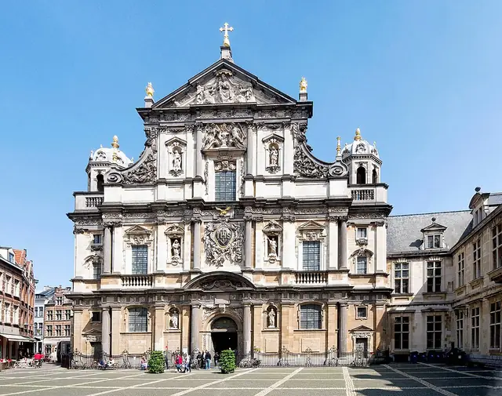
Photo: Rolf Kranz, CC BY-SA 4.0, via Wikimedia Commons St. Charles Borromeo Church
Hendrik Conscienceplein 12, 2000 Antwerp, Belgium
Built between 1615 and 1621 as Antwerp's Jesuit church, this Baroque showpiece on the Hendrik Conscienceplein was modelled on the Gesù in Rome and designed by Pieter Huyssens and François d'Aguilon. It was the first church in the world dedicated to Ignatius of Loyola. Peter Paul Rubens painted altarpieces and designed 39 ceiling pieces, largely executed by pupils including Anthony van Dyck, but lightning set the church ablaze in 1718 and destroyed them. After the Jesuits were suppressed it was renamed for Saint Charles Borromeo in 1779.
- Built
- 1621
- Architect
- Pieter Huyssens & François d'Aguilon
- Style
- Baroque
- Today
- Parish church
-
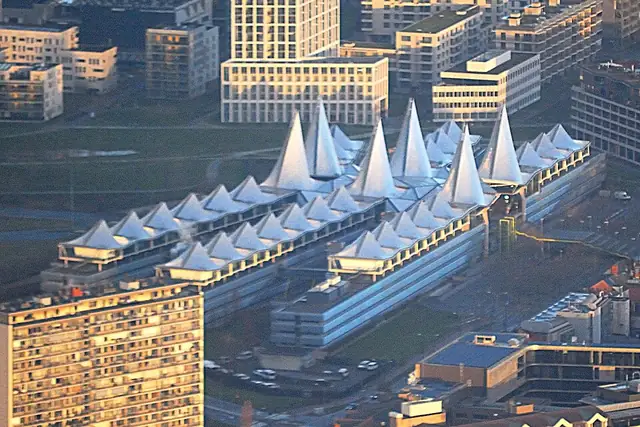
Photo: Lieven Smits, CC BY-SA 4.0, via Wikimedia Commons Antwerp Law Courts
Bolivarplaats 20, 2000 Antwerp, Belgium
Locals call it 'De Frietzakken' — the chip cones — or the Butterfly Palace, thanks to the 32 pointed sail roofs that crown this courthouse. Designed by the Richard Rogers Partnership, led by Ivan Harbour, with VK Studio and engineers Arup, it was built from 2001 on the site of the old Antwerp-South station, right on top of the new Bolivar road tunnel. King Albert II inaugurated it on 28 March 2006, bringing courts scattered across 14 locations under one roof. It cost about €280 million.
- Built
- 2006
- Architect
- Richard Rogers Partnership (Ivan Harbour) with VK Studio
- Style
- High-tech
- Height
- 18 m (59 ft)
- Stories
- 5
- Today
- Courthouse
-
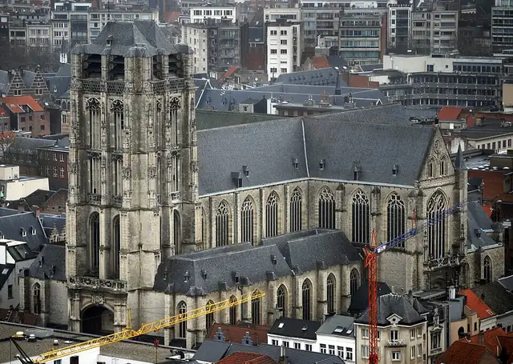
Photo: Lieven Smits, CC BY-SA 3.0, via Wikimedia Commons St. James' Church
Sint-Jacobstraat 9, 2000 Antwerp, Belgium
St. James' began as a hostel and chapel for pilgrims on the road to Santiago de Compostela, and it is still a pilgrimage church today. Construction of the Brabantine Gothic church, designed by members of the Waghemakere family and Rombout Keldermans, started in 1491 and was only completed in 1656. Its planned 150-metre tower was never finished when Antwerp's fortunes faded. Inside are 24 altars, paintings by Rubens and Jordaens, rich Baroque marble — and the tomb of Peter Paul Rubens and his wife Helena Fourment.
- Built
- 1656
- Architect
- Waghemakere family & Rombout Keldermans
- Style
- Brabantine Gothic
- Today
- Church
-
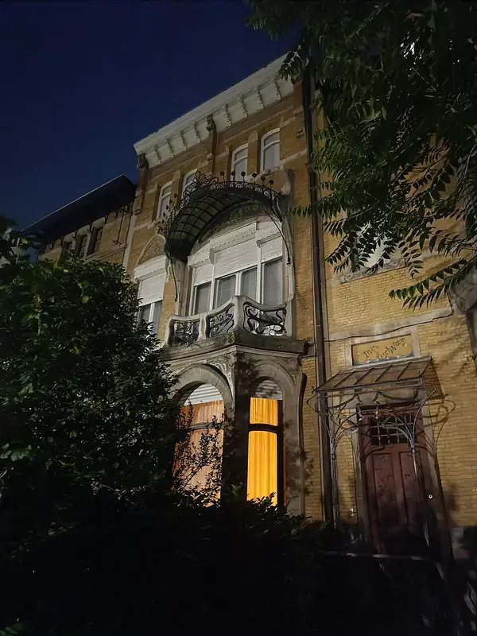
Photo: Karmakolle, CC0, via Wikimedia Commons Zurenborg
Cogels-Osylei, 2600 Berchem, Antwerp, Belgium
Zurenborg is Antwerp's showcase of fin-de-siècle townhouses, laid out on farmland of the Osy family and largely built between 1894 and 1906. Its grandest street, Cogels-Osylei, was aimed at the well-to-do and lines up Art Nouveau facades next to Gothic Revival, Neo-Renaissance and Neoclassical mansions. Many houses carry names and themes from nature, such as The Sunflower, The Rose and The Tulip. It is one of the few parts of the city developed to an urban plan in the late 19th century.
- Built
- 1906
- Architect
- Various
- Style
- Art Nouveau
- Today
- Residential district
-
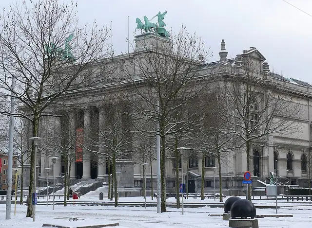
Photo: Ad Meskens, CC BY-SA 3.0, via Wikimedia Commons Royal Museum of Fine Arts Antwerp
Plaatsnijdersstraat 2A, 2000 Antwerp, Belgium
Known as the KMSKA, this museum was founded in 1810 and moved into its grand Neoclassical palace in the Zuid district, designed by Jean-Jacques Winders and Frans Van Dijk. Built from 1884, it opened in 1890 and was completed in 1894 on the site of the former Antwerp Citadel, crowned by bronze chariots of the goddess Pheme by Thomas Vinçotte. Its collection spans the 14th to 20th centuries, from Jan van Eyck to Rubens. After 11 years of renovation it reopened in September 2022 with a new hall for modern art.
- Built
- 1894
- Architect
- Jean-Jacques Winders & Frans Van Dijk
- Style
- Neoclassical
- Today
- Museum
-
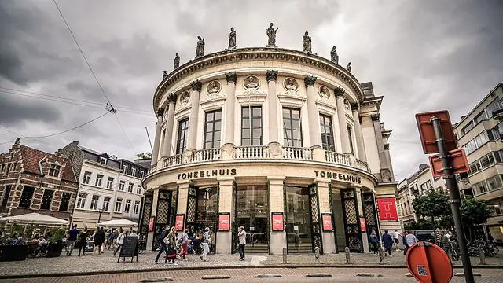
Photo: Wichien W, CC0, via Wikimedia Commons Bourla Theatre
Komedieplaats 18, 2000 Antwerp, Belgium
City architect Pierre Bourla designed this Neoclassical theatre in 1827 on the site of an old tapestry market. Building began in 1829 but was held up by the Belgian Revolution, and it finally opened in 1834 as the Théâtre Royal Français. Seating around 900 people, it is the last municipal theatre in Europe with its original stage machinery, which fills five levels above and below the stage. Protected since 1938, it is now home to the theatre company Het Toneelhuis.
- Built
- 1834
- Architect
- Pierre Bourla
- Style
- Neoclassical
- Today
- Theatre
-
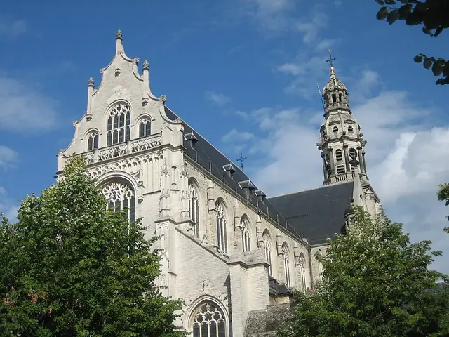
Photo: bert76 16:33, 20 August 2006 (UTC), CC BY-SA 3.0, via Wikimedia Commons St. Paul's Church
Sint-Paulusstraat 22, 2000 Antwerp, Belgium
Close to the Scheldt in the old sailors' quarter, St. Paul's was built for the Dominicans after floods threatened their first church. Designs are attributed to Domien de Waghemakere, with Rombout de Dryvere taking over after 1542, and the new church was dedicated in 1571. Its exterior is mostly Gothic with a Baroque tower, while the interior glows with Baroque decoration and paintings by Rubens, Van Dyck and Jordaens. Outside, a dramatic Calvary garden holds 63 life-size statues.
- Built
- 1571
- Architect
- Domien de Waghemakere & Rombout de Dryvere
- Style
- Gothic & Baroque
- Today
- Church
.jpg){kind=link}


-.jpg){kind=link}
.JPG){kind=link}


.jpg){kind=link}
,_Antwerp,_Belgium,_aerial_view_(cropped).jpg){kind=link}

.jpg){kind=link}
.jpeg){kind=link}

The app's quiz · 10 questions
How well do you know Antwerp?
The same quiz as in Stamped!: name the landmark, its architect, its style or the year it was finished. Every round is different.
Know Antwerp well?
Locals know their city best. Suggest a landmark we're missing, a fix to one we have, or share your own photo of one. Every suggestion is checked before it goes into the app.
More cities in Europe
- Amsterdam
- Athens
- Barcelona
- Bath
- Berlin
- Bilbao
- Brussels
- Budapest
- Copenhagen
- Cork
- Dublin
- Edinburgh
- Florence
- Glasgow
- Granada
- Hamburg
- Helsinki
- Istanbul
- Kraków
- Lisbon
- London
- Madrid
- Marseille
- Milan
- Munich
- Naples
- Nice
- Oslo
- Paris
- Porto
- Prague
- Reykjavik
- Riga
- Rome
- Rotterdam
- Salzburg
- Seville
- St. Petersburg
- Stockholm
- Tbilisi
- Valencia
- Venice
- Vienna
- Warsaw
- Zurich
Stamp all 15 in Stamped!
Fly through Antwerp in photoreal 3D, take its 10-question quiz, plan your days and earn a passport stamp at every landmark. Free on iPhone, iPad, Mac and Apple Vision Pro.
Download on theApp StoreEnjoying the guides? Leave a tip to help keep new cities coming.